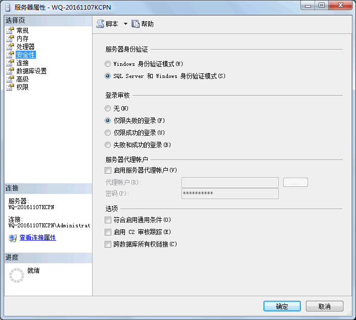
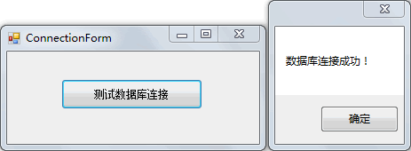

首页 > 编程笔记
C# Connection：连接数据库
C# 语言中 Connection 类是 ADO.NET 组件连接数据库时第一个要使用的类，也是通过编程访问数据库的第一步。
接下来我们来了解一下 Connection 类中的常用属性和方法，以及如何连接 SQL Server 数据库。
SqlConnection 类中提供的常用属性和方法如下表所示。
数据库连接串的书写方法有很多，这里介绍两种常用的方法。
此外，还可以在连接字符串中使用 Integrate Security = True 的属性，省略用户名和密码，即以 Windows 身份验证方式登录 SQL Server 数据库。
将数据库连接更改如下：
在该界面中可以通过选择“服务器身份验证”中的两个选项来切换身份验证方式，默认情况下选中“Windows 身份验证模式”。
在选中任意一种身份验证模式后需要重启 SQL Server 服务器才能完成服务器身份验证模式的更改。
在完成了数据库连接串的编写后即可使用 SqlConnection 类与数据库连接，分以下 3 步完成。
在使用 Open 方法打开数据库连接时，如果数据库的连接串不正确或者数据库的服务处于关闭状态，会出现打开数据库失败的相关异常，因此需要通过异常处理来处理异常。
打开数据库连接的语句形式如下。
关闭数据库连接的语句形式如下。
除了使用异常处理的方式释放资源外，还可以使用 using 的方式释放资源。
具体的语句如下。
在 .NET 平台上资源分为托管资源和非托管资源，托管资源是由 .NET 框架直接提供对其资源在内存中的管理，例如声明的变量；非托管资源则不能直接由 .NET 框架对其管理，需要使用代码来释放资源，例如数据库资源、操作系统资源等。
下面通过实例来演示 SqlConnection 类的使用。
【实例 1】创建与本机 SQL Server 数据库的连接，并使用异常处理。
根据题目要求，连接 SQL Server 数据库时使用的用户名为 sa、密码为 pwdpwd，连接的数据库为test。
创建 Windows 窗体应用程序，并在窗体上放置一个按钮，在按钮的单击事件中加入以下代码。
从上面的执行效果可以看出，数据库已经成功。
【实例 2】在上一实例的基础上使用 using 关键字释放资源。
根据题目要求，省略了 finally 部分的语句，代码如下。
接下来我们来了解一下 Connection 类中的常用属性和方法，以及如何连接 SQL Server 数据库。
Connection 类概述
Connection 类根据要访问的数据和访问方式不同，使用的命名空间也不同，类名也稍有区别，在这里我们使用的是 SqlConnection 类，以及微软提供的 SQL Server 2014 数据库。SqlConnection 类中提供的常用属性和方法如下表所示。
| 属性或方法 | 说明 |
|---|---|
| SqlConnection() | 无参构造方法 |
| SqlConnection(string connectionstring) | 带参数的构造方法，数据库连接字符串作为参数 |
| Connectionstring | 属性，获取或设置数据库的连接串 |
| State | 属性，获取当前数据库的状态，由枚举类型 Connectionstate 为其提供值 |
| ConnectionTimeout | 属性，获取在尝试连接时终止尝试并生成错误之前所等待的时间 |
| DataSource | 属性，获取要连接的 SQL Server 的实例名 |
| Open() | 方法，打开一个数据库连接 |
| Close() | 方法，关闭数据库连接 |
| BeginTransaction() | 方法，开始一个数据库事务 |
使用 Connection 类连接数据库
在使用 Connection 类连接 SQL Server 2014 时，先要编写数据库连接串。数据库连接串的书写方法有很多，这里介绍两种常用的方法。
第1种方式
server = 服务器名称 / 数据库的实例名 ; uid = 登录名 ; pwd = 密码 ; database = 数据库名称
其中：- server：用于指定要访问数据库的数据库实例名，服务器名称可以换成 IP 地址或者数据库所在的计算机名称，如果访问的是本机数据库，则可以使用“.”来代替，如果使用的是默认的数据库实例名，则可以省略数据库实例名。例如连接的是本机的默认数据库，则可以写成“server = .”。
- uid：登录到指定 SQL Server 数据库实例的用户名，相当于以 SQL Server 身份验证方式登录数据库时使用的用户名，例如 sa 用户。
- pwd：与 uid 用户对应的密码。
- database：要访问数据库实例下的数据库名。
第2种方式
Data Source = 服务器名称 \ 数据库实例名 ; Initial Catalog = 数据库名称 ; User ID = 用户名 ; Password = 密码
其中：- Data Source：与第1种连接串写法中的 server 属性的写法一样，用于指定数据库所在的服务器名称和数据库实例名，如果连接的是本机的默认数据库实例，则写成“Data Source=. ”的形式。
- Initial Catalog：与第 1 种连接串写法中的 database 属性的写法一样，用于指定在 Data Source 中数据库实例下的数据库名。
- User ID：与第 1 种连接串写法中的 uid 属性的写法一样，用于指定登录数据库的用户名。
- Password：与第 1 种连接串写法中的 pwd 属性的写法一样，用于指定 User ID 用户名所对应的密码。
此外，还可以在连接字符串中使用 Integrate Security = True 的属性，省略用户名和密码，即以 Windows 身份验证方式登录 SQL Server 数据库。
将数据库连接更改如下：
Data Source = 服务器名称 \ 数据库实例名 ; Initial Catalog = 数据库名称 ; Integrate Security = True
需要注意的是，由于在使用 Windows 身份验证的方式登录数据库时，会对数据库的安全性造成一定的影响，因此不建议使用 Windows 身份验证的方法，而是使用 SQL Server 验证方式登录数据库，即指定用户名和密码。提示：在 SQL Server 2014 中更改数据库的身份验证方式并不复杂，只需要在 SQL Server 的 SQL Server Management Studio 2014 中右击数据库的服务器结点，弹出如下图所示的服务器属性界面，并在界面中选择“安全性”选项。

在该界面中可以通过选择“服务器身份验证”中的两个选项来切换身份验证方式，默认情况下选中“Windows 身份验证模式”。
在选中任意一种身份验证模式后需要重启 SQL Server 服务器才能完成服务器身份验证模式的更改。
在完成了数据库连接串的编写后即可使用 SqlConnection 类与数据库连接，分以下 3 步完成。
1) 创建 SqlConnection 类的实例
对于 SqlConnection 类来说，上表中提供了两个构造方法，通常是使用带一个字符串参数的构造方法来设置数据库的连接串创建其实例，语句形式如下。SqlConnection 连接对象名 = new SqlConnection( 数据库连接串 );
2) 打开数据库连接
在创建 SqlConnection 连接类的实例后并没有连接上数据库，需要使用连接类的 Open 方法打开数据库的连接。在使用 Open 方法打开数据库连接时，如果数据库的连接串不正确或者数据库的服务处于关闭状态，会出现打开数据库失败的相关异常，因此需要通过异常处理来处理异常。
打开数据库连接的语句形式如下。
连接对象名.Open();
3) 关闭数据库连接
在对数据库的操作结束后要将数据库的连接断开，以节省数据库连接的资源。关闭数据库连接的语句形式如下。
连接对象名.Close();
如果在打开数据库连接时使用了异常处理，则将关闭数据库连接的语句放到异常处理的 finally 语句中，这样能保证无论是否发生了异常都将数据库连接断开，以释放资源。除了使用异常处理的方式释放资源外，还可以使用 using 的方式释放资源。
具体的语句如下。
using(SqlConnection 连接对象名 = new SQLConnection( 数据库连接串 ))
{
//打开数据库连接
//对数据库先关操作的语句
}
在 .NET 平台上资源分为托管资源和非托管资源，托管资源是由 .NET 框架直接提供对其资源在内存中的管理，例如声明的变量；非托管资源则不能直接由 .NET 框架对其管理，需要使用代码来释放资源，例如数据库资源、操作系统资源等。
下面通过实例来演示 SqlConnection 类的使用。
【实例 1】创建与本机 SQL Server 数据库的连接，并使用异常处理。
根据题目要求，连接 SQL Server 数据库时使用的用户名为 sa、密码为 pwdpwd，连接的数据库为test。
创建 Windows 窗体应用程序，并在窗体上放置一个按钮，在按钮的单击事件中加入以下代码。
//编写数据库连接串
string connStr = "Data source=.;Initial Catalog=test;User ID=sa;Password=pwdpwd";
//创建SqlConnection的实例
SqlConnection conn = null;
try
{
conn = new SqlConnection(connStr);
//打开数据库连接
conn.Open();
MessageBox.Show("数据库连接成功！");
}
catch(Exception ex)
{
MessageBox.Show("数据库连接失败！" + ex.Message);
}
finally
{
if (conn != null)
{
//关闭数据库连接
conn.Close();
}
}
执行上面的代码，效果如下图所示。

从上面的执行效果可以看出，数据库已经成功。
【实例 2】在上一实例的基础上使用 using 关键字释放资源。
根据题目要求，省略了 finally 部分的语句，代码如下。
//编写数据库连接串
string connStr = "Data source=.;Initial Catalog=test;User ID=sa;Password=pwdpwd";
//创建SqlConnection的实例
try
{
using(SqlConnection conn=new SqlConnection(connStr))
{
//打开数据库连接
conn.Open();
MessageBox.Show("数据库连接成功！");
}
}
catch(Exception ex)
{
MessageBox.Show("数据库连接失败！" + ex.Message);
}
执行上面的代码，效果与上一实例—样。关注公众号「站长严长生」，在手机上阅读所有教程，随时随地都能学习。内含一款搜索神器，免费下载全网书籍和视频。

微信扫码关注公众号